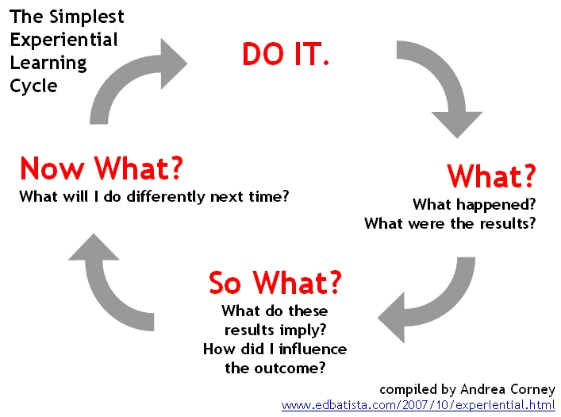

If I dont get it, try making the problem smaller or find a different explanation to task at hand, ask peers
Otherwise proceed
Come up with a plan on how I will accomplish this
Attempt to solve the problem
If fail to solve it return to step 1
Otherwise proceed
Ask myself is the problem/task solved
If no, return to step 1
If yes but could be done better(a.k.a. refactoring) return to step 1
Otherwise - congratz you finally made it out of what seemed as endless loops of pain
Try breaking your code and know when to STOP

What is your long term goal and or career pathway?
My long term goal is to do contract work.
To achieve this I first need to put myself completely out there at EDA
I know that all the technical skills can be learned but that isn't really what cuts the edge anymore
You actually have to be a decent human being and that is one of my big goals.
Im here to become a better version of myself!
What skills (non-technical - human skills) would you like to see developed in yourself while at EDA?
Confidence because just too often I have known the right path and answer but haven't spoken up
Mindfulness about others. As sometimes my mouth might move a bit faster than my brain and super rarely I would managed to talk my way into uncomfortable situations by being too direct
Comunication and how to do it as quite often I would find it hard to speak about things that fascinate me
A description of your own strengths and limitations
I'll go with limitless
And things that might be considered my limitations are just stuff to work on to get better at
I'm about getting stuff done, analyzing, drawing conclusions, questioning the process, looking for ways to improve
I like to help!
Based on the above description, a commitment to how you will manage your workload in this programme. This should include - an explanation of how you will manage yourself to work productively and safely with other learners, facilitators and industry/community representatives.
Joining EDA wasn't a 1-day or 1-month decision. It was well thought over, analyzed and other paths considered.
I'm not here to try something out and hopefully get a developers job afterwards. I'm here to finally put career on the right way and actually do something I enjoy
In preparation to EDA I have made sure that there wouldn't be any financial problems, my partner is well aware of the upcoming workload and time has been prioritised accordingly.
My productivity will be achieved by planning my time. As of now entering sprint-3 there is still plenty of time to pick up habits that will help me to give my best and share my knowledge while attending EDA
To ensure a safe environment I will make sure that my actions or words are considerate of others while also looking around to make sure that nobody else is acting in unacceptable way
A commitment as to how and where you will seek help in a timely way.
I shall stick to problem solving methods first of all. Only once I have failed to resolve this multiple times I shall reach out to my cohort first of all(If someone knows the answer they make their neural pathways stronger and I get to move on - win win// think of cohort as a big family).
Problems that cant be solved by my peers will be directed to programme coaches/tutors
A description of what you expect from the facilitation team
I expect to receive answers to questions that have to be answered(some questions just have to be asked and you see the answer)
I expect to receive guidance if asking for one
And going deeper into EDA world I feel like I expect more chats about their experience @ EDA
Any scheduling information such as block-out times when you are committed to other things.
I feel like there should be atleast 6hours at weekend when I turn myself of from thinking about worldly matters. This should be time that would stay uninterrupted for my mental wellbeing.
More to follow as too early to make a good judgement call on real time constraints
Learning Plan updated
What is your long term goal and/or career pathway?
I'm doing this so I could be proud of my vocation
I would like to see the financial impact
I would like to travel more but first I need a profession that might allow it
Still looking at contracting in few years and eventually trying a start up
What do you think your biggest strengths and limitations will be in Bootcamp?
Strenghts - tech savvy
Limitations - might be a bit rough around edges, need some work on that
I stand by my first drawn conclusions to strenghts and limitations
What do you think your biggest non-technical challenge at Bootcamp will be?
Talking in front of a group with out a doubt
Recognizing procrastination and fighting it
What non-technical skills - human skills - would you like to see developed in yourself while at EDA?
Communication, leadership skills
What are your expectations from the Bootcamp team?
Setting clear boundaries to problems when boundaries exist otherwise sky's the limit
Guiding by vaguely leading on
I dont expect to be given answers
What are your expectations of yourself on Bootcamp?
If I get stuck ask my cohort if I'm still unable to move then EDA team
I'll tackle tasks straight away instead of leaving it all for the last. I'll learn to take breaks. I'll lay out a plan on what has to be done and stick to it first before adding extra stuff. MVP - minimum viable product
Regarding ensuring a safe work environment I'll make sure not to carry any grudge with me and if there are pressing matters in my life that affect my ability to give my best to EDA I'll make sure to seek help within team